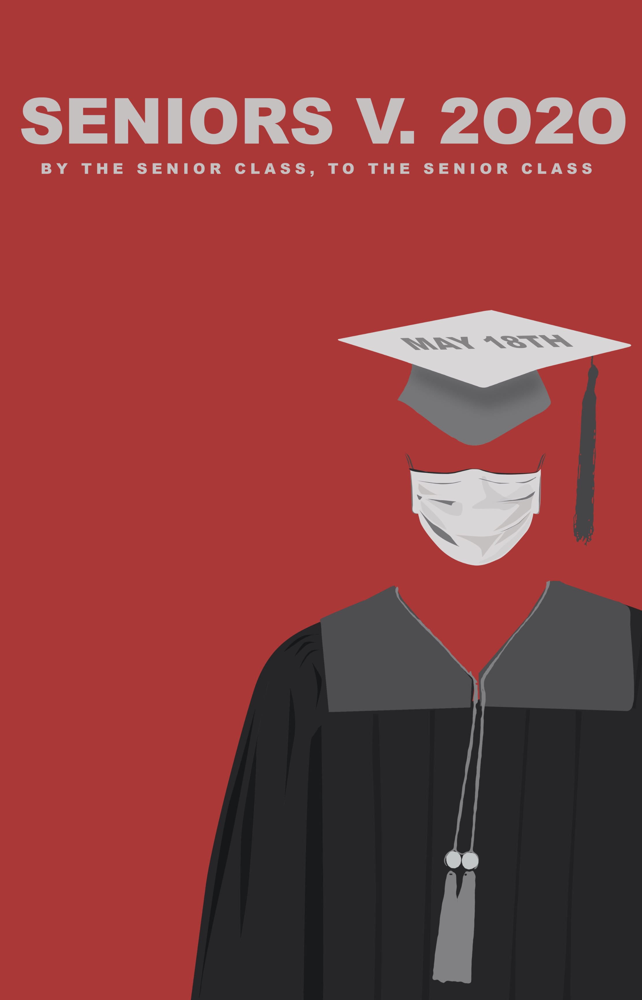

This was my concentration for my AP 2D Design course. My artists statement follows:
"My concentration encapsulates the idea of physicaql and cultural disruption through a magazine that explores the art and cultural scene in Amman, Jordan. I deviated from the original layout format and traditional Jordanian art forms to present a fresher image of my country to the world that beetter reflects the burgeoning contemporary arts scene in this city.
I started off this concentration by creating my logo; it set a foundation for the rest of my magazine mockup in terms of the color scheme and disruptive style. I wanted the text of the origina logo "Fann," which translates to art in Arabic to shake the idea that our language, like our local arts scene is static and trapped in a vaccum of the past, especially in the western imagination. With this intention, it served as a catalyst in the creation of the articles and layouts detailing the local arts and culture scene.
Noticeable motifs of pixelation and decomposition are woven throughout the magazine mockup. The "glitch" found in the background of many of the pieces is the aesthetic embodiment of disruption but cohesively ties the layouts together. Additionally, because print publications are falling out of favor I also provided a digital mockup of the app and website of "Fann" "
Medium/s: Photography, Photoshop, Illustrator, Indesign This was one of the only physical artworks that I submitted to the AP program and it is also one of my proudest. I have always been interested in the abstract style and wanted to explore that while still maintaining some realistic elements such as human figures, and a natural landscape. The result was a very interesting mix between abstract and reality. Medium/s: pencil colors This photo shows a girl looking into a computer system, the writing on her face translates to "AI or human?" in arabic. This piece represents the dependence on technology and artificial intelligence that human beings have developed, and starts the conversation of our possible future reality, where the two could possibly become indistinguishable. Medium/s: Photography, Photoshop This was a quarantine project, I researched about this up and coming art style which replicates the effects of thermal imaging. I created a self portrait of myself in that style and included different aspects of myself in thebackground, such as the palm trees; which represent the meaning of my name- Tala ( palm trees in arabic ) and a beach, representing my love for the ocean and hot weather.Medium/s: Spray paint, Acrylic paint This was also a quarantine project, I wanted to explore a new adobe software, which utilized more 3d aspects, and came up with this abstract breakfast scene where it looks like something has just fell into the bowl and the liquid is flying out. This artwork followed the prompt "chances and accidents" and so I decided to squish my friends face into a scanner and see what comes out. The resullt is a composite of many scans into one photo. Medium/s: Scanner, Photoshop

This poster was made for a docuseries that members of my senior class created during peak covid times, Our graduating class did not get a graduation and so this docuseries was a highlight of our end of year virtual festivities. Medium/s: Illustrator